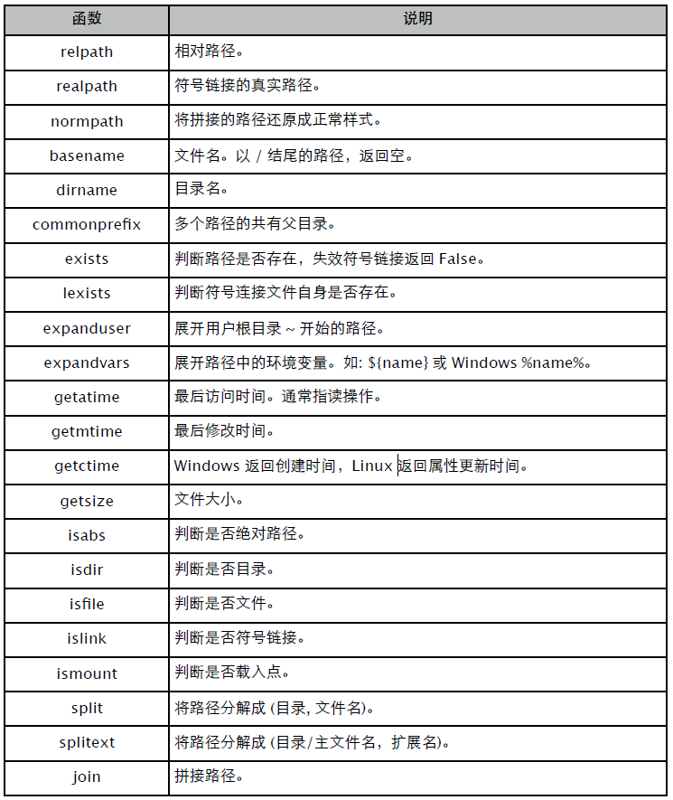
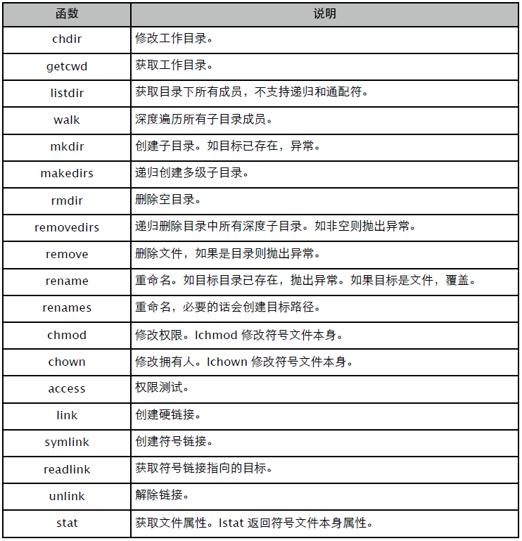
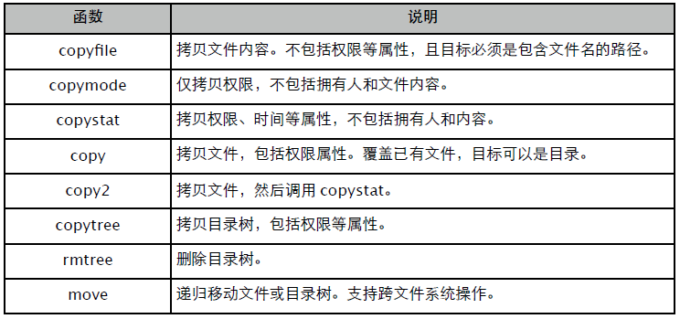

文件与目录
file
通常建议用内置函数 open() 打开文件，file 用于类型判断。
>>> with open("test.txt", "w") as f:
... print isinstance(f, file) // 类型判断
... f.writelines(map(str, range(10)))
TrueFile Object 实现了上下文协议，可确保文件被及时关闭。实际上，文件对象被回收时总是会调用 close 方法，所以可以写下面这样的代码。
>>> open("test.txt", "r").read()
'0123456789'如果要把数据写到磁盘上，除调用 flush() 外，还得用 sync()，以确保数据从系统缓冲区同步到磁盘。close() 总是会调用这两个方法。
打开模式：
- r: 只读。
- w: 只写。已存在文件将被清除 (truncate)。
- a: 添加。总是添加到文件尾部。
- b: 二进制模式。
- r+: 更新文件，可读写，不会截短文件。
- w+: 更新文件，可读写，清除原有内容。
- a+: 更新文件，可读写，总是在尾部添加。
文件对象还实现了迭代器协议，可直接循环获取其内容。
>>> with open("main.py", "r") as f:
... for line in f: print line
...读方法总能判断不同平台的换行标记，但写方法不会添加任何换行字符，包括 writelines。
>>> with open("test.txt", "w") as f:
... f.write("a")
... f.writelines("bc")
>>> cat test.txt
abc如必须按不同平台写入换行标记，可使用 os.linesep。
>>> os.linesep
'\n'字符串本身就是序列类型，可以直接用 writelines(str)。readline() 会返回包括换行符在内的整个行数据。通常建议用迭代器或 xreadlines() 代替 readlines()，后者默认一次性读取整个文件。
binary
用 struct 将其他类型构建成二进制字节数组，然后写入文件即可。
>>> import struct
>>> data = struct.pack("2i2s", 0x1234, 0xFF56, "ab")
>>> open("test.dat", "w").write(data)
>>> !xxd -g 1 test.dat
0000000: 34 12 00 00 56 ff 00 00 61 62 4...V...ab
>>> struct.unpack("2i2s", open("test.dat").read())
(4660, 65366, 'ab')
>>> with open("test.dat") as f: // 结构化读取
... def xread(fmt):
... n = struct.calcsize(fmt) // 计算长度
... s = f.read(n)
... return struct.unpack(fmt, s)
... print xread("i")
... print xread("i")
... print xread("2s")
(4660,)
(65366,)
('ab',)对于相同类型的数据，可考虑用 array，以获得更好的性能。
>>> import array
>>> datas = array.array("i")
>>> datas.append(0x1234)
>>> datas.append(0xFF56)
>>> datas.tofile(open("test.dat", "w"))
>>> !xxd -g 1 test.dat
0000000: 34 12 00 00 56 ff 00 00 4...V...
>>> d2 = array.array("i")
>>> d2.fromfile(open("test.dat"), 2)
>>> d2
array('i', [4660, 65366])类似的还有 bytearray，可作 Buffer 用，详情参见 struct 章节。
encoding
标准库 codecs 提供了一个包装版的 open()，可自动完成编码转换工作。
>>> import sys
>>> reload(sys)
>>> sys.setdefaultencoding("utf-8")
>>> with codecs.open("test.txt", "w", "gbk") as f:
... f.write("中国")
>>> !xxd -g 1 test.txt
0000000: d6 d0 b9 fa ....
>>> "中国".encode("gbk")
'\xd6\xd0\xb9\xfa'
>>> s = codecs.open("test.txt", encoding = "gbk").read()
>>> s
u'\u4e2d\u56fd'
>>> print s
中国descriptor
除使用文件对象外，某些时候还可能需要直接操控文件描述符。
>>> import os
>>> fd = os.open("test.txt", os.O_CREAT | os.O_RDWR, 0644) // 注意是八进制。
>>> ls -l test.txt
-rw-r--r-- 1 yuhen staff 6 3 25 10:45 test.txt
>>> os.write(fd, "abc")
3
>>> f = os.fdopen(fd, "r+") // 通过描述符创建文件对象。
>>> f.seek(0, os.SEEK_SET) // 注意调整位置。
>>> f.read()
'abc'
>>> f.write("123")
>>> f.flush() // os 库提供的函数是系统调用，因此需要把数据从用户缓存
// 刷新到系统缓存。
>>> os.lseek(fd, 0, os.SEEK_SET)
0
>>> os.read(fd, 100)
'abc123'
>>> os.close(fd) // 通常建议用和打开对应的方式关闭。文件对象 fileno() 方法返回其对应的文件描述符。
tempfile
Python 对临时文件的支持算是我所见过语言中最丰富的。通常建议使用 NamedTemporaryFile，其他可以忽略。
- TemporaryFile: 创建临时文件对象，关闭时自动删除。
- NamedTemporaryFile: 创建临时文件对象，可获取文件名，参数决定是否自动删除。
- SpooledTemporaryFile: 和 TemporaryFile 类似，只有在数据超过阈值时，才写入硬盘。
>>> import tempfile, os.path
>>> tmp = tempfile.NamedTemporaryFile()
>>> tmp.name
'/var/folders/r2/4vkjhz6s6lz02hk6nh2qb99c0000gn/T/tmpYYB6p3'
>>> os.path.exists(tmp.name)
True
>>> tmp.close()
>>> os.path.exists(tmp.name)
False默认使用系统临时目录和前缀，当然也可以指定不同的配置。
>>> with tempfile.NamedTemporaryFile(prefix = "xxx_", suffix = ".tmp", dir = ".") as f:
... print f.name
...
/Users/yuhen/test/xxx_SL3apY.tmp与临时文件有关的函数还有：
- tempfile.gettempdir: 返回系统临时文件存放路径。
- tempfile.gettempprefix: 返回默认的临时文件名前缀。
- tempfile.mkdtemp: 创建临时目录。
- tempfile.mkstemp: 创建临时文件，返回描述符和文件名，需手工删除。
- os.tempnam: 仅返回有效的临时文件名，并不创建文件。
- os.tmpfile(): 创建临时文件对象，关闭后自动删除。
>>> tempfile.gettempdir()
'/var/folders/r2/4vkjhz6s6lz02hk6nh2qb99c0000gn/T'
>>> tempfile.gettempprefix()
'tmp'>>> d = tempfile.mkdtemp(); d
'/var/folders/r2/4vkjhz6s6lz02hk6nh2qb99c0000gn/T/tmpE_bRWd'
>>> os.path.exists(d)
True
>>> os.removedirs(d)>>> fd, name = tempfile.mkstemp()
>>> os.write(fd, "123\n")
4
>>> os.close(fd)
>>> os.path.exists(name)
True
>>> os.remove(name)os.path
常用函数列表：

拼接的目录看上乱糟糟让人烦心。
>>> os.path.normpath("./../a/b/../c")
'../a/c'展开用户根路径，或者包含系统环境变量的路径。
>>> os.path.expanduser("~/.vimrc")
'/Users/yuhen/.vimrc'
>>> os.path.expandvars("$HOME/.vimrc")
'/Users/yuhen/.vimrc'除非只要扩展名，否则还是先用 basename 将路径去掉。
>>> os.path.splitext(os.path.basename("/usr/local/lib/libevent.a"))
('libevent', '.a')os
常用函数列表：

迭代 walk，返回 "(路径，子目录列表，文件列表)"，可配合 fnmatch 做通配符过滤。
>>> for path, dirs, files in os.walk("."):
... for f in files:
... if fnmatch.fnmatch(f, "*.py"):
... print os.path.join(path, f)
./main.py
./bak/amqplib_test.py
./bak/eventlet_test.py
./bak/extract_text.py
./bak/fabric_test.py如果仅操作当前目录，可以用 glob 代替 listdir，前者支持通配符。
>>> glob.glob("./bak/[rs]*.py") # 迭代器版本: iglob
['./bak/redis_test.py', './bak/socket_test.py']如目录中还有文件存在，removedirs 会抛出异常。建议用 shutil.rmtree() 代替，注意参数区别。
>>> os.makedirs("./a/b/c")
>>> open("./a/b/c/test.txt", "w").write("abc")
>>> os.removedirs("./a/b/c")
OSError: [Errno 66] Directory not empty: './a/b/c'
>>> import shutil
>>> shutil.rmtree("./a")某些时候，需要先测试文件是否拥有某些权限。
>>> os.access("a.txt", os.W_OK)
True都是哪些人需要修改文件时间？
>>> stat -x a.txt
File: "a.txt"
Size: 0 FileType: Regular File
Mode: (0644/-rw-r--r--) Uid: ( 501/ yuhen) Gid: ( 20/ staff)
Device: 1,2 Inode: 5111644 Links: 1
Access: Mon Mar 25 17:43:01 2013
Modify: Mon Mar 25 17:43:01 2013
Change: Mon Mar 25 17:43:01 2013
>>> atime = time.mktime(datetime.datetime(2010, 10, 1).utctimetuple())
>>> mtime = time.mktime(datetime.datetime(2010, 11, 2).utctimetuple())
>>> os.utime("a.txt", (atime, mtime))
>>> os.stat("a.txt").st_atime == atime
True获取文件权限信息时，别忘了转换成八进制。
>>> oct(os.stat("a.txt").st_mode)
'0100644'shutil
常用函数列表：

copytree 可以指定多个忽略通配符，且必须确保目标路径不存在。
>>> shutil.copytree("./bak", "./b/bak", ignore = shutil.ignore_patterns("*.pyc",
"*.bak"))